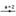
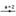

Curve[Expression
e1, Expression e2, Parameter t, Number a, Number b]: Yields the Cartesian
parametric curve for the given x-expression
e1 and y-expression e2 (using
parameter t) within the given
interval [a, b].
Example: Input of c
= Curve[2 cos(t), 2 sin(t), t, 0, 2 pi] creates a circle with radius
2 around the origin of the coordinate system.
Note: Parametric curves can be used with pre-defined functions and arithmetic operations.
Example: Input c(3) returns the point at parameter position 3 on curve c.
Note: Using the mouse you
can also place a point on a curve using tool  New Point or command Point. Since the parameters a and b are dynamic you could use slider variables as well (see tool  Slider).
New Point or command Point. Since the parameters a and b are dynamic you could use slider variables as well (see tool  Slider).
Curvature[Point, Curve]: Calculates the curvature of the curve in the given point.
CurvatureVector[Point, Curve]: Yields the curvature vector of the curve in the given point.
Derivative[Curve]: Returns the derivative of the parametric curve.
Derivative[Curve, Number n]: Returns the nth derivative of the parametric curve.
Length[Curve, Number t1, Number t2]: Yields the length of the curve between the parameter values t1 and t2.
Length[Curve c, Point A, Point B]: Yields the length of curve c between two points A and B that lie on the curve.
OsculatingCircle[Point, Curve]: Yields the osculating circle of the curve in the given point.
Tangent[Point, Curve]: Creates the tangent to the curve in the given point.